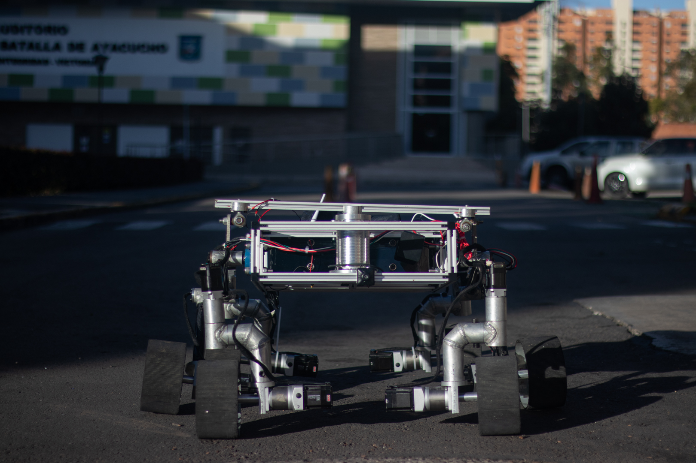
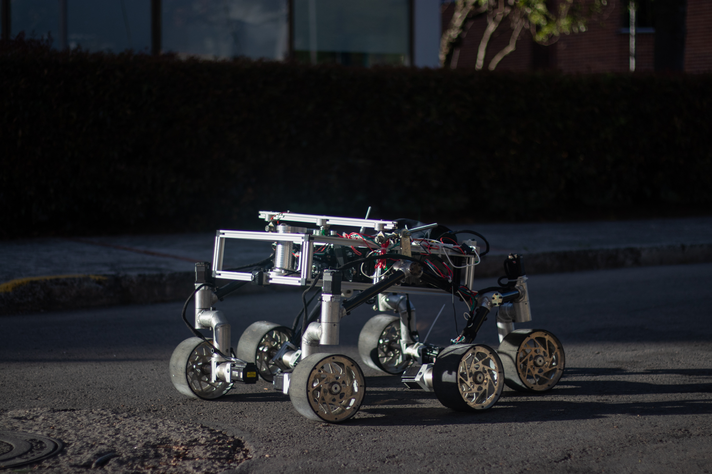
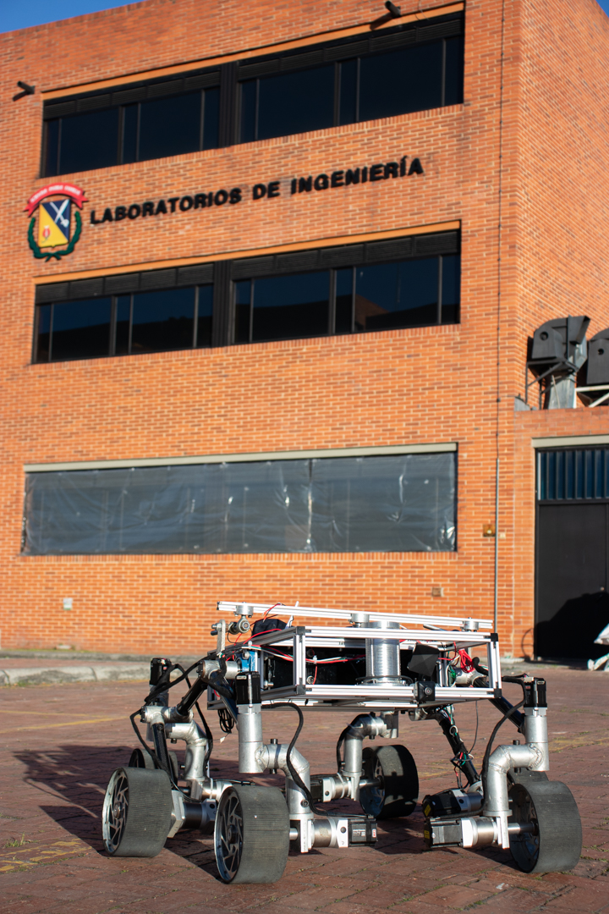
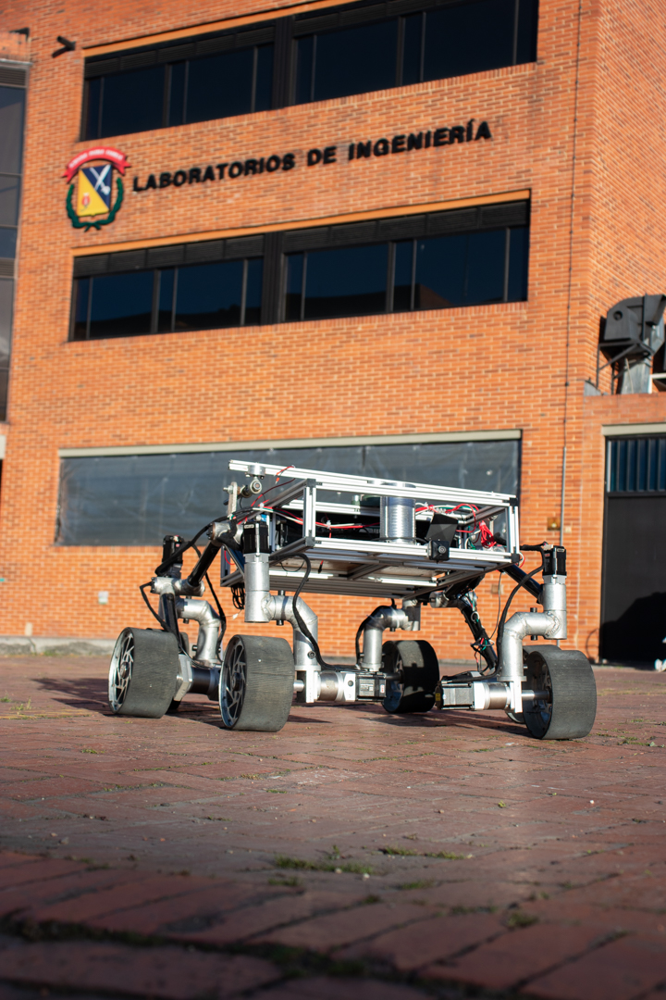
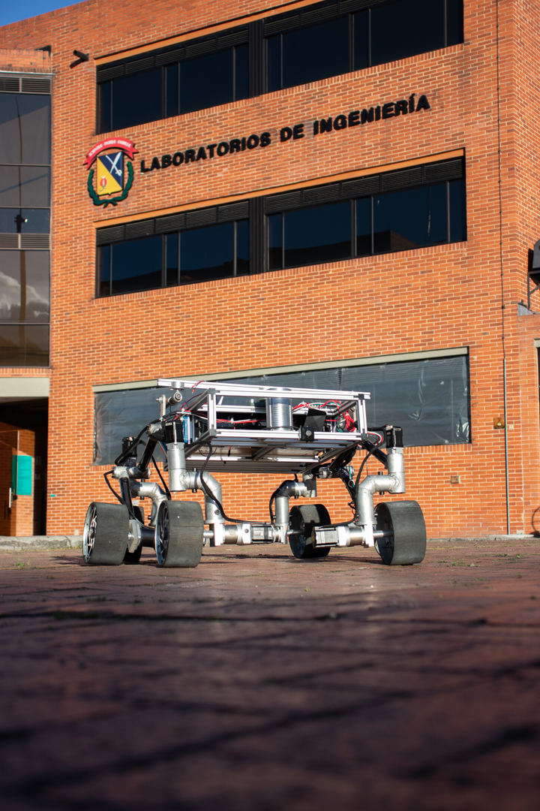
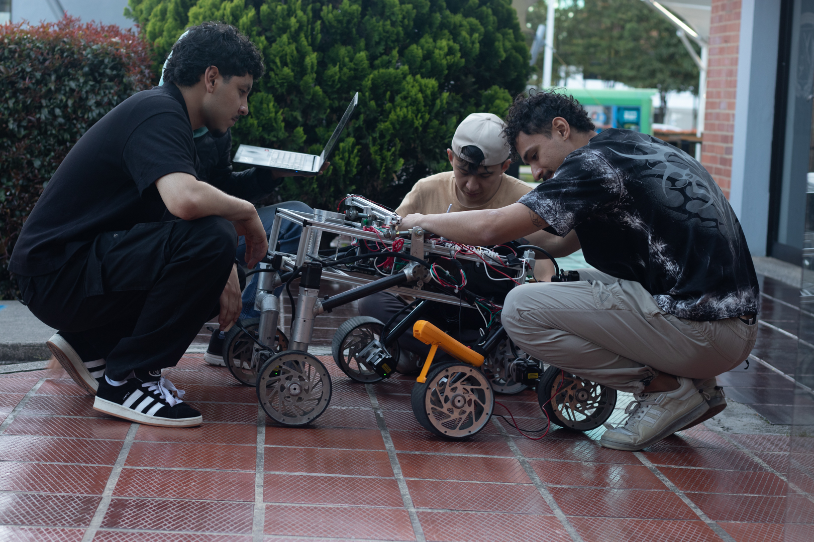
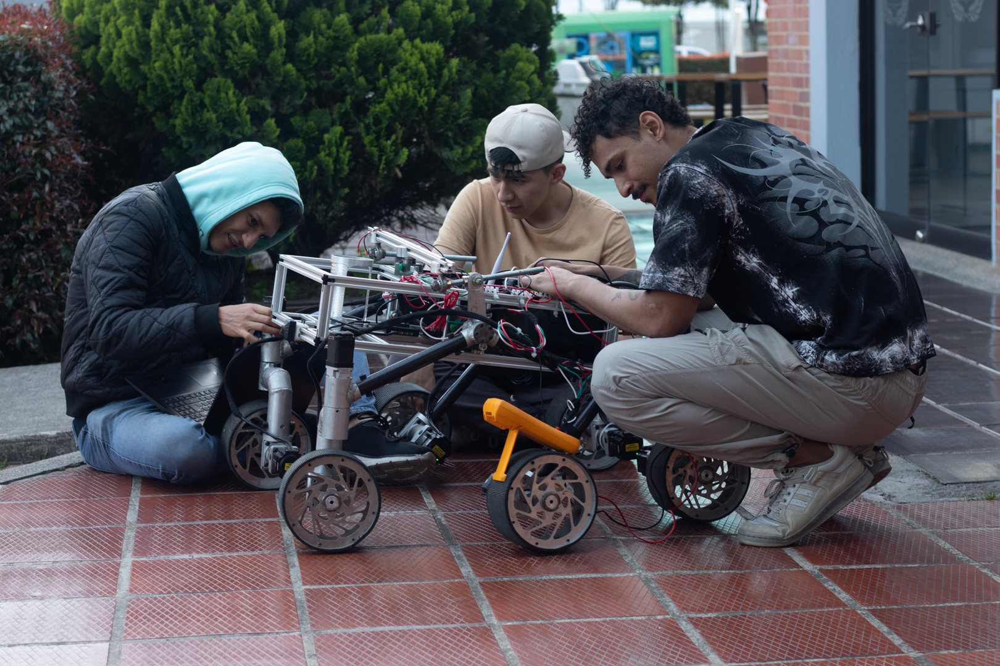
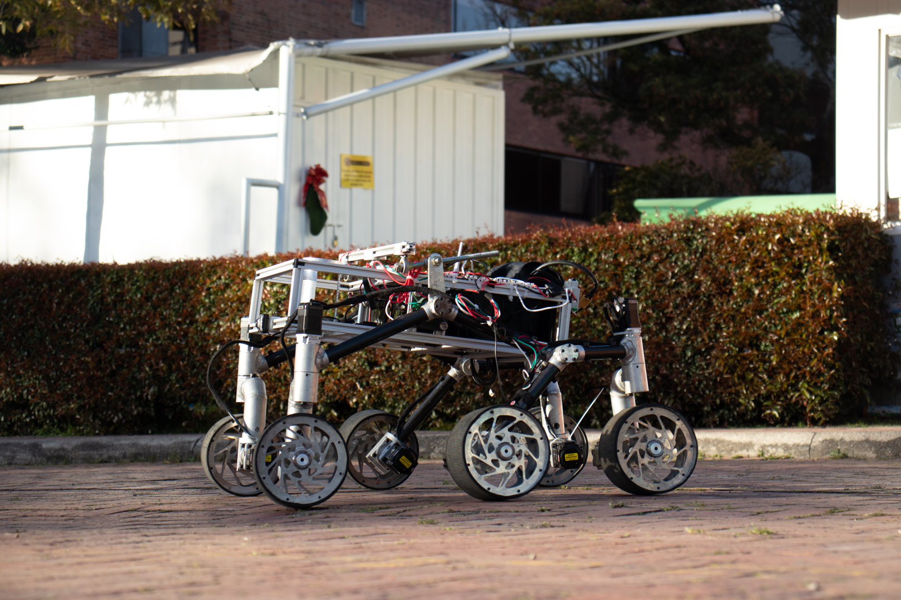

Diseño mecánico
Chasis, suspensión, transmisión, integración CAD y resistencia estructural.
University Rover Challenge | Estados Unidos
Un sistema robótico universitario diseñado para exploración análoga, navegación autónoma, manipulación de precisión y ciencia aplicada en terreno tipo Marte.
Perfil de misión
El Proyecto Rover integra mecánica, electrónica, software, comunicaciones y ciencia para construir un robot exploratorio capaz de competir en el Rover Challenge University. La meta es validar tecnología, formar talento y conectar academia con industria.
Pruebas en terreno con navegación, teleoperación y autonomía progresiva.
Recolección y análisis de muestras para escenarios de búsqueda de vida.
Proyecto integrador para investigación, prototipado y formación interdisciplinaria.
Misión MILIMARS
El equipo prepara una arquitectura robusta para superar misiones de entrega, servicio de equipos, navegación autónoma y ciencia, bajo condiciones de tiempo, comunicación y terreno exigentes.
Sistemas del rover
Chasis, suspensión, transmisión, integración CAD y resistencia estructural.
Telemetría, navegación autónoma, interfaz de misión y control del rover.
Potencia, sensores, PCB, actuadores y arquitectura eléctrica confiable.
Manipulación, cinemática, agarre y ejecución de tareas de precisión.
Validación, protocolos, documentación y revisión de riesgos operativos.
Muestras, sensores ambientales, análisis y protocolos de misión científica.
Comando de misión

Dirección académica, visión estratégica y representación institucional del proyecto.

Integración del sistema de soporte, documentación y operación del módulo análogo.

Software, telemetría, interfaz de misión, comunicaciones y control del rover.

Diseño, control y validación del brazo para tareas de precisión en competencia.

Chasis, suspensión, tracción y desempeño del rover sobre terreno análogo marciano.
Bitácora visual



Ruta de misión
Arquitectura del rover, requisitos de competencia y planeación de subsistemas.
Construcción de chasis, brazo, electrónica, software base e integración mecánica.
Validación de locomoción, comunicación, consumo, navegación y seguridad.
Presentación del rover ante jurados y ejecución de misiones en Estados Unidos.
Patrocinio y aliados
El proyecto abre espacios para aliados académicos, tecnológicos e industriales interesados en visibilidad, innovación aplicada y formación de talento en robótica espacial.